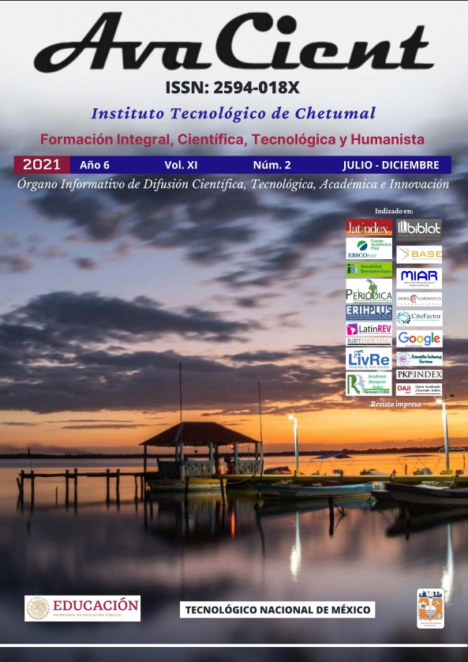

Organizadores
Este evento es organizado por el Tecnológico Nacional de México, y el campus sede: Instituto
Tecnológico de Durango.
Los esperamos el 24 y 25 de octubre del presente año.
Fecha de Evento INNOVATECNM 2022
Fecha límite de envío de extenso o carteles: 30 de agosto.
Resultados de aceptación de extenso o carteles: 15 de septiembre.
Fecha límite de inscripción de autores: 23 de septiembre.
Publicación de trabajos

Los trabajos presentados en INNOVATECNM serán considerados para su publicación en un número especial de la Revista AvaCient editada por el Tecnológico Nacional de México.
De acuerdo con los procedimientos estándar para la revista, todos los artículos serán revisados por pares antes de que los editores tomen una decisión final sobre la idoneidad para la publicación.
Los trabajos aceptados serán publicados en la Revista digital AvaCient con ISSN: 2594-018X.
Presidentes de conferencia
Patricia Calderón Campos
Secretaria Académica de Investigación e Innovación.
Jésus Olayo Lortia
Director de Posgrado Investigación e Innovación del TecNM.
Hector Javier Vergara Hernández
Profesor Investigador Titular C del TecNM - Instituto Tecnológico de Morelia.
Nicolás Oscar Soto Cruz
Profesor Investigador Titular C del TecNM-Instituto Tecnológico de Durango.
Reseña de conferencias
Este evento es la primera Conferencia Internacional organizada por el Tecnológico Nacional de México. Se convoca a estudiantes, académicos e investigadores, a participar de forma presencial en la Cumbre Nacional de Desarrollo Tecnológico, Investigación e Innovación INNOVATECNM 2022, en dos modalidades:
- Congreso Internacional de Investigación
- Formación de Redes de Investigación.
En el Congreso Internacional de Investigación, se recibirán trabajos con un máximo de cinco autores, privilegiando las investigaciones realizadas en redes de colaboración interinstitucionales o internacionales.
El trabajo deberá contener una investigación para su divulgación, que muestren un impacto en el entorno local, regional o nacional. Las siguientes categorías de documentos en idioma español o inglés son bienvenidas:
- Trabajo en extenso.
- Presentación en carteles.
En el caso particular de los trabajos en carteles, la participación será de forma remota (en línea).